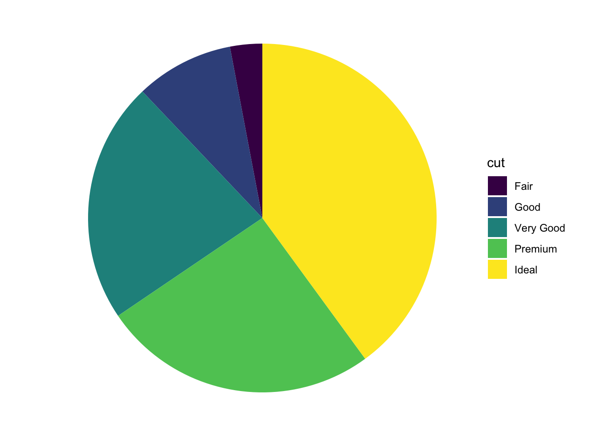

Chapter 6 Probability
6.1 Load packages, load data, set theme
Let’s load the packages that we need for this chapter.
library("knitr") # for rendering the RMarkdown file
library("kableExtra") # for nicely formatted tables
library("arrangements") # fast generators and iterators for creating combinations
library("DiagrammeR") # for drawing diagrams
library("tidyverse") # for data wrangling Set the plotting theme.
6.2 Counting
Imagine that there are three balls in an urn. The balls are labeled 1, 2, and 3. Let’s consider a few possible situations.
balls = 1:3 # number of balls in urn
ndraws = 2 # number of draws
# order matters, without replacement
permutations(balls, ndraws) [,1] [,2]
[1,] 1 2
[2,] 1 3
[3,] 2 1
[4,] 2 3
[5,] 3 1
[6,] 3 2 [,1] [,2]
[1,] 1 1
[2,] 1 2
[3,] 1 3
[4,] 2 1
[5,] 2 2
[6,] 2 3
[7,] 3 1
[8,] 3 2
[9,] 3 3 [,1] [,2]
[1,] 1 1
[2,] 1 2
[3,] 1 3
[4,] 2 2
[5,] 2 3
[6,] 3 3 [,1] [,2]
[1,] 1 2
[2,] 1 3
[3,] 2 3I’ve generated the figures below using the DiagrammeR package. It’s a powerful package for drawing diagrams in R. See information on how to use the DiagrammeR package here.
Figure 6.1: Drawing two marbles out of an urn with replacement.
Figure 6.2: Drawing two marbles out of an urn without replacement.
6.3 The random secretary
A secretary types four letters to four people and addresses the four envelopes. If he inserts the letters at random, each in a different envelope, what is the probability that exactly three letters will go into the right envelope?
df.letters = permutations(x = 1:4, k = 4) %>%
as_tibble(.name_repair = ~ str_c("person_", 1:4)) %>%
mutate(n_correct = (person_1 == 1) +
(person_2 == 2) +
(person_3 == 3) +
(person_4 == 4))
df.letters %>%
summarize(prob_3_correct = sum(n_correct == 3) / n())# A tibble: 1 × 1
prob_3_correct
<dbl>
1 0ggplot(data = df.letters,
mapping = aes(x = n_correct)) +
geom_bar(aes(y = stat(count)/sum(count)),
color = "black",
fill = "lightblue") +
scale_y_continuous(labels = scales::percent,
expand = c(0, 0)) +
labs(x = "number correct",
y = "probability")Warning: `stat(count)` was deprecated in ggplot2 3.4.0.
ℹ Please use `after_stat(count)` instead.
This warning is displayed once every 8 hours.
Call `lifecycle::last_lifecycle_warnings()` to see where this warning was
generated.
6.4 Flipping a coin many times
# Example taken from here: http://statsthinking21.org/probability.html#empirical-frequency
set.seed(1) # set the seed so that the outcome is consistent
nsamples = 50000 # how many flips do we want to make?
# create some random coin flips using the rbinom() function with
# a true probability of 0.5
df.samples = tibble(trial_number = seq(nsamples),
outcomes = rbinom(nsamples, 1, 0.5)) %>%
mutate(mean_probability = cumsum(outcomes) / seq_along(outcomes)) %>%
filter(trial_number >= 10) # start with a minimum sample of 10 flips
ggplot(data = df.samples,
mapping = aes(x = trial_number, y = mean_probability)) +
geom_hline(yintercept = 0.5, color = "gray", linetype = "dashed") +
geom_line() +
labs(x = "Number of trials",
y = "Estimated probability of heads") +
theme_classic() +
theme(text = element_text(size = 20))Figure 6.3: A demonstration of the law of large numbers.
6.5 Clue guide to probability
who = c("ms_scarlet", "col_mustard", "mrs_white",
"mr_green", "mrs_peacock", "prof_plum")
what = c("candlestick", "knife", "lead_pipe",
"revolver", "rope", "wrench")
where = c("study", "kitchen", "conservatory",
"lounge", "billiard_room", "hall",
"dining_room", "ballroom", "library")
df.clue = expand_grid(who = who,
what = what,
where = where)
df.suspects = df.clue %>%
distinct(who) %>%
mutate(gender = ifelse(test = who %in% c("ms_scarlet", "mrs_white", "mrs_peacock"),
yes = "female",
no = "male"))| who | gender |
|---|---|
| col_mustard | male |
| mr_green | male |
| prof_plum | male |
| ms_scarlet | female |
| mrs_white | female |
| mrs_peacock | female |
6.5.1 Conditional probability
# conditional probability (via rules of probability)
df.suspects %>%
summarize(p_prof_plum_given_male =
sum(gender == "male" & who == "prof_plum") /
sum(gender == "male"))# A tibble: 1 × 1
p_prof_plum_given_male
<dbl>
1 0.333# conditional probability (via rejection)
df.suspects %>%
filter(gender == "male") %>%
summarize(p_prof_plum_given_male =
sum(who == "prof_plum") /
n())# A tibble: 1 × 1
p_prof_plum_given_male
<dbl>
1 0.3336.6 Probability operations
# Make a deck of cards
df.cards = tibble(suit = rep(c("Clubs", "Spades", "Hearts", "Diamonds"), each = 8),
value = rep(c("7", "8", "9", "10", "Jack", "Queen", "King", "Ace"), 4)) # conditional probability: p(Hearts | Queen) (via rules of probability)
df.cards %>%
summarize(p_hearts_given_queen =
sum(suit == "Hearts" & value == "Queen") /
sum(value == "Queen"))# A tibble: 1 × 1
p_hearts_given_queen
<dbl>
1 0.25# conditional probability: p(Hearts | Queen) (via rejection)
df.cards %>%
filter(value == "Queen") %>%
summarize(p_hearts_given_queen = sum(suit == "Hearts")/n())# A tibble: 1 × 1
p_hearts_given_queen
<dbl>
1 0.256.8 Getting Bayes right matters
6.8.1 Bayesian reasoning example
# prior probability of the disease
p.D = 0.0001
# sensitivity of the test
p.T_given_D = 0.999
# specificity of the test
p.notT_given_notD = 0.999
p.T_given_notD = (1 - p.notT_given_notD)
# posterior given a positive test result
p.D_given_T = (p.T_given_D * p.D) / ((p.T_given_D * p.D) + (p.T_given_notD * (1-p.D)))
p.D_given_T[1] 0.09083476.8.2 Bayesian reasoning example (COVID rapid test)
https://pubmed.ncbi.nlm.nih.gov/34242764/#:~:text=The%20overall%20sensitivity%20of%20the,%25%20CI%2024.4%2D65.1).
# prior probability of the disease
p.D = 0.1
# sensitivity covid rapid test
p.T_given_D = 0.653
# specificity of covid rapid test
p.notT_given_notD = 0.999
p.T_given_notD = (1 - p.notT_given_notD)
# posterior given a positive test result
p.D_given_T = (p.T_given_D * p.D) / ((p.T_given_D * p.D) + (p.T_given_notD * (1-p.D)))
# posterior given a negative test result
p.D_given_notT = ((1-p.T_given_D) * p.D) / (((1-p.T_given_D) * p.D) + ((1-p.T_given_notD) * (1-p.D)))
str_c("Probability of COVID given a positive test: ", round(p.D_given_T * 100, 1), "%")[1] "Probability of COVID given a positive test: 98.6%"[1] "Probability of COVID given a negative test: 3.7%"6.9 Building a Bayesis
6.9.1 Dice example
# prior
p.four = 0.5
p.six = 0.5
# possibilities
df.possibilities = tibble(observation = 1:6,
p.four = c(rep(1/4, 4), rep(0, 2)),
p.six = c(rep(1/6, 6)))
# data
# data = c(4)
# data = c(4, 2, 1)
data = c(4, 2, 1, 3, 1)
# data = c(4, 2, 1, 3, 1, 5)
# likelihood
p.data_given_four = prod(df.possibilities$p.four[data])
p.data_given_six = prod(df.possibilities$p.six[data])
# posterior
p.four_given_data = (p.data_given_four * p.four) /
((p.data_given_four * p.four) +
(p.data_given_six * p.six))
p.four_given_data[1] 0.8836364Given this data \(d\) = [4, 2, 1, 3, 1], there is a 88% chance that the four sided die was rolled rather than the six sided die.
6.11 Session info
Information about this R session including which version of R was used, and what packages were loaded.
R version 4.3.2 (2023-10-31)
Platform: aarch64-apple-darwin20 (64-bit)
Running under: macOS Sonoma 14.1.2
Matrix products: default
BLAS: /Library/Frameworks/R.framework/Versions/4.3-arm64/Resources/lib/libRblas.0.dylib
LAPACK: /Library/Frameworks/R.framework/Versions/4.3-arm64/Resources/lib/libRlapack.dylib; LAPACK version 3.11.0
locale:
[1] en_US.UTF-8/en_US.UTF-8/en_US.UTF-8/C/en_US.UTF-8/en_US.UTF-8
time zone: America/Los_Angeles
tzcode source: internal
attached base packages:
[1] stats graphics grDevices utils datasets methods base
other attached packages:
[1] lubridate_1.9.3 forcats_1.0.0 stringr_1.5.1 dplyr_1.1.4
[5] purrr_1.0.2 readr_2.1.4 tidyr_1.3.0 tibble_3.2.1
[9] ggplot2_3.4.4 tidyverse_2.0.0 DiagrammeR_1.0.10 arrangements_1.1.9
[13] kableExtra_1.3.4 knitr_1.45
loaded via a namespace (and not attached):
[1] gmp_0.7-3 sass_0.4.8 utf8_1.2.4 generics_0.1.3
[5] xml2_1.3.6 stringi_1.8.3 hms_1.1.3 digest_0.6.33
[9] magrittr_2.0.3 timechange_0.2.0 evaluate_0.23 grid_4.3.2
[13] RColorBrewer_1.1-3 bookdown_0.37 fastmap_1.1.1 jsonlite_1.8.8
[17] httr_1.4.7 rvest_1.0.3 fansi_1.0.6 viridisLite_0.4.2
[21] scales_1.3.0 jquerylib_0.1.4 cli_3.6.2 crayon_1.5.2
[25] rlang_1.1.2 visNetwork_2.1.2 ellipsis_0.3.2 munsell_0.5.0
[29] withr_2.5.2 cachem_1.0.8 yaml_2.3.8 tools_4.3.2
[33] tzdb_0.4.0 colorspace_2.1-0 webshot_0.5.5 vctrs_0.6.5
[37] R6_2.5.1 lifecycle_1.0.4 htmlwidgets_1.6.4 pkgconfig_2.0.3
[41] bslib_0.6.1 pillar_1.9.0 gtable_0.3.4 glue_1.6.2
[45] systemfonts_1.0.5 highr_0.10 xfun_0.41 tidyselect_1.2.0
[49] rstudioapi_0.15.0 farver_2.1.1 htmltools_0.5.7 labeling_0.4.3
[53] rmarkdown_2.25 svglite_2.1.3 compiler_4.3.2